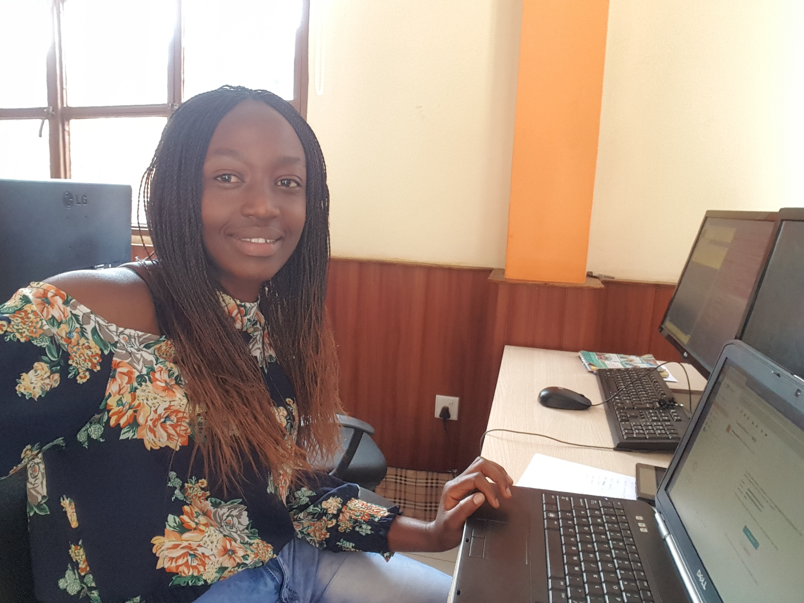

I am Gentille GASANABANDI
Below is a list of projects i have created and some active link to them:
I designed it to help Itorero ry'Igihugu commission for the management of rwandan activities done by secondary holders students for six months to know their country in general.And to help those students to make the registration online.
I holds a bachelor degree in computer science where in which i focused on theories during my universies, something i can say it was education only without practical skills, So i have joined moringa school to match these theories with knowledge of programming.
I currently have web building , Communication and searching skills i got from the program. Beyond of that i personally enjoy making friends doing aerobics, reading and driving.